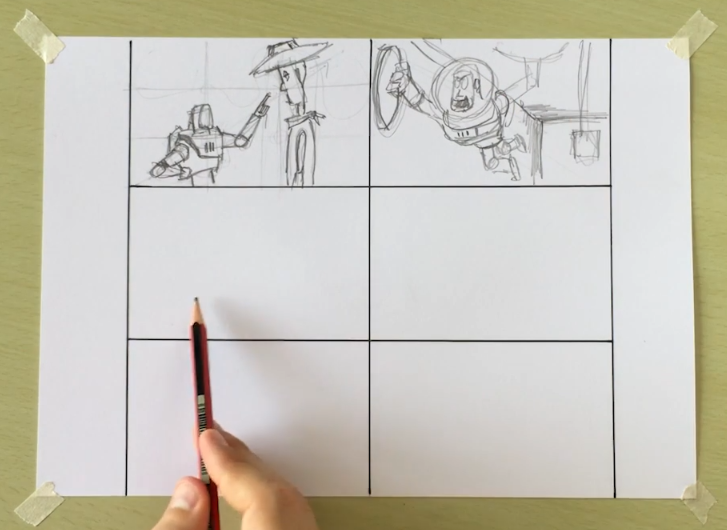
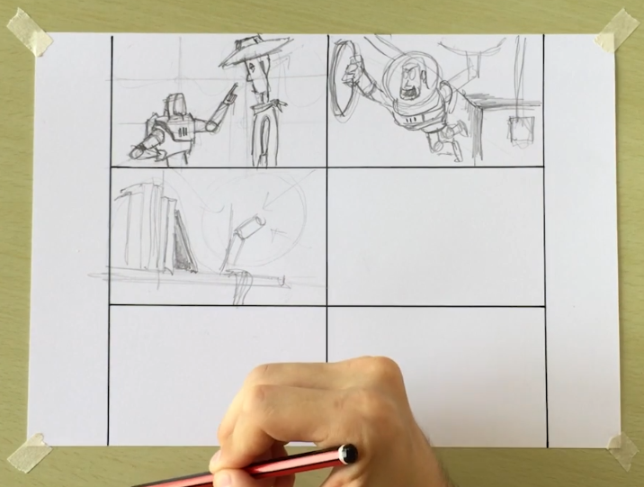

Dibujo perceptual
Este tipo de dibujo se realiza con el mundo real como referencia, es una representación del mundo tal cual lo ven nuestros ojos.
Este tipo de dibujo se realiza con el mundo real como referencia, es una representación del mundo tal cual lo ven nuestros ojos.
Este tipo de dibujo va más allá de lo que ven nuestros ojos. En este tipo de dibujo expresamos lo que entendemos o pensamos acerca del elemento dibujado, por lo que no hace falta representarlo tal cual es.
Lo anterior es una cualidad muy interesante del dibujo que debemos desarrollar. No basta con hacer un curso de dibujo, aprender la perspectiva u otros fundamentos y quedarnos solo con eso.
El dibujo puede interpretarse o utilizarse como una herramienta de comunicación, y al hablar de comunicación tenemos que entender que tenemos dos grandes ramas, la comunicación interna y la comunicación externa.
Esta se utiliza para el desarrollo de ideas y conceptos. Un ejemplo de esto es un dibujo hecho por Le Corbusier (arquitecto suizo) donde utilizó una caracola como referencia para pasar a la proporción áurea y así terminar desarrollando el concepto de un edificio, como se puede ver en las siguientes imágenes. De esta forma Cobrusier usó el dibujo para hablar consigo mismo y desarrollar un concepto determinado.
Además, la comunicación interna también se utiliza para proyectos de formas y espacios, entonces, cuando nosotros estamos queriendo inventar por ejemplo, la arquitectura de un edificio, empezamos a dibujar lo que nosotros tenemos en la cabeza, pero no lo hacemos como una cualidad artística, es decir, no solo para presentarselo a alguien para que diga "qué lindo dibujo o edificio". Podemos ver un ejemplo de esto por medio de la siguiente imagen.
De esta forma nosotros empezamos a dibujar para nosotros entender bien qué es lo que tenemos en la cabeza, y de esa forma poder ir haciendo cambios y desarrollar también lo que son las distintas etapas proyectuales de un objeto, de formas y espacios, por ejemplo, en arquitectura trabajamos con espacios y en diseño industrial trabajamos sobre formas principalmente. Sin embargo, otra gran cualidad de la comunicación es la comunicación externa.
Este tipo de comunicación hace referencia a la comunicación con otras personas. Una forma de comunicación externa es la expresión artísticas.
Un ejemplo puede ser un dibujo en el que no se vea el desarrollo de ideas determinadas, conceptos, formas o espacios. Puede ser una respresentación de algo que vemos en un momento determinado, para poder apreciarlo o compartirlo tiempo después. En la siguiente imagen podemos ver un dibujo realizado por Van Gogh, este simplemente es una expresión artística sin desarrollo de ideas, conceptos, formas o espacios, simplemente quiso representar lo que veía en ese momento en un papel para apreciarlo o compartirlo con otros luego, tal cual y como podemos verlo ahora muchos años después.
Otra forma de comunicación externa es la expresión técnica, donde nosotoros hacemos uso seuper preciso del dibujo, es decir, dibujamos al milímetro o al centímetro para poder generar dibujos super precisos y pasarselos a otra persona, y que lo entienda exactamente como nosotros lo pensamos.
El dibujo de la expresión técnica o dibujo técnico nos permite poder ser super precisos para tener una comunicación muy eficiente con otras personas, y que entiendan exactamente lo que nosotros queriamos que entendiesen. En la siguiente imagen podemos ver un ejemplo de la expresión técnica o dibujo técnico.

Todos los tipos de dibujos mencionados anteriormente comparten fundamentos, ciertas bases o ciertas reglas. Por esta razón es importante entender las reglas del dibujo, porque si no, estaremos dibujando como lo hacían directamente en la edad de piedra.
Al entender las reglas del dibujo podremos comunicanos con otros ya sea de forma artística o técnica de manera efectiva.
Estas son las reglas o bases que hacen que la construcción de un dibujo sea correcta.
El dibujo posee distintas ettapas las cuales son necesarias para obtener un resultado óptimo, estas etapas son:
El boceto es la etapa que nos permite construir la estructura de nuestro dibujo de una forma muy sencilla y muy rápida. En esta etapa estaremos haciendo la creación básica para poder empezar a posicionar lo que son las formas y para poder delimitar también lo que son los espacios dentro de nuestro dibujo.
Nosotros vamos a crear la composición, vamos a dar la escala, las proporciones, es decir, el boceto va a ser la base para que nosotros empecemos luego, arriba de este boceto, a construir las siguientes etapas de nuestro dibujo.
En esta etapa comenzamos a delimitar el boceto que teniamos de una forma más prolija. Esta etapa nos permite generar con distintos trazos la separación que tenemos entre forma y espacio, o entre objetos y espacio. De esa forma vamos a poder ir delimitando de una forma mucho más precisa, y vamos a poder marcar exactamente la forma que tienen los objetos dentro de nuestro dibujo.
En esta tercera etapa empezamos a marcar lo que son las diferencias entre las luces y las sombras, y de esa forma le vamos a poder dar un relieve o una tercera dimensión a nuestro dibujo.
Vamos a poder empezar a separar lo que son las partes más oscuras de las más claras, y gracias a esto podremos marcar el volumen adentro de nuestro dibujo.
Esto es una cuertión super importante que tenemos que manejar muy bien para poder crear dibujos precisos y que nos permitan a nosotros dar una sensación de relieve muy relevante.
Esta etapa nos permite darle mucho más realismo al dibujo y vamos a ver que tiene un montón de cuestiones muy importantes a tener en cuenta a la hora de utilizar el color como por ejemplo, las combinaciones posibles o los distintos significados que tiene el color para nuestro dibujo.
Sin importar si estamos haciendo un dibujo perceptual o un dibujo creativo, lo que importa es que las bases del dibujo y las distintas etapas estarán funcionando de la misma forma para estos dos grandes mundos que tenemos dentro del dibujo.
Entendiendo las cuatro etapas mencionadas, vamos a poder crear dibujos de una forma estructurada, bien sencilla y que nos va a permitir llegar a un muy buen nivel en nuestras ilustraciones.
Acá comenzaremos a hablar de cómo nosotros representamos un espacio en un papel. Para poder hacer esto, tenemos que entender bien lo que son los ejes X, Y y Z.
Para este fin abobrdaremos los conceptos de perspectiva, axonometría y planos. Estos son tres distintos recursos que tenemos para representar el espacio en un papel, entonces, para poder pasar el espacio al paperl tenemos que entender cómo trabajan los tres sistemas espaciales mencionados anteriormente.
Tenemos la posibilidad de dibujar el espacio en dos dimensiones (2D) o tres dimensiones (3D). Las diferencias son muy grandes ya que vamos a estar dibujando un objeto de forma plana o un objeto de forma tridimensional.
En la parte 3D tenemos la posibilidad de dibujar en perspectiva, es decir, tal cual como nosotros vemos el mundo.
Por otro lado, en 3D también tenemos el sistema espacial de las axonometrías, que nos permitirá crear un objeto y poder construirlo en un espacio en tres dimensiones sin ninguna deformación infundadad por nuestro ojo.
Con este sistema podremos ver las distintas caras del elemento dibujado con sus verdaderas magnitudes, en la axonometría no estamos invlucrados y en la perspectiva si.
A continuación se presentan 3 conceptos de axonometría para dejar clara su definición.
En el mundo de las dos dimensiones (2D) vamos a ver lo que son los planos o las vistas. Este sistema espacial nos permite representar tanto la forma como el espacio de forma plana, es decir, sin ver ninguna de las medidas. No se ve la profundidad en este sistema espacial, solo vemos el alto y el ancho de los objetos.
Las perspectivas se relacionan con cómo nuestro ojo ve el mundo, sin embargo las axonometrías y los planos o las vistas están relacionados a cómo nuestra mente entiende lo que es una forma y un espacio. Las etapas del dibujo siempre estarán relacionadas a los distintos sistemas espaciales.
En la siguiente imagen podremos ver un ejemplo de planos o vistas, axonometría y perspectiva.
Las operaciones no están relacionadas con ningún sistema espacial o etapa del dibujo, a continuación mencionados algunas de las operaciones más comunes que se realizan en el dibujo:
Esta operación nos permite mostrar otras cosas que en recursos como la fotografía no podríamos ver. Un ejemplo de transparentar se da cuando dibujamos la representación de una radiografía, a continuación se muestran algunas imágenes que desmuestran la operación transparentar.
Esta operación consiste en representar un objeto como si tuviese un corte, para así mostrar más información del mismo, información que no podrías mostrarse sin cortar el objeto. Un ejemplo de esta operación de da cuando dibujamos una casa de dos pisos cortada a la mitad de forma horizontal para mostrar así todo lo que hay dentro de la casa en la planta baja. Entonces, con cortar realizamos un corte en el objeto para ver cómo está compuesto su interior, cortar también es llamada seccionar. En las siguientes imágenes podremos ver ejemplos de esta operación.
Esta operación nos permite reconstruir cierta información que queremos transmitir al observador. Un ejemplo de reconstruir se da cuando dibujamos el esqueleto de un animal y usamos una línea punteada para mostrar el contorno de la forma total del animal, es decir, su contorno como si tuviera los músculos y todo, en ese caso reconstruimos la información de la contextura del animal. Veremos un ejemplo en la siguiente imagen.
Esta operación muestra información de un objeto que no podríamos ver sin hacer el despiece. Un ejemplo sencillo de esta operación sería dibujar una hambuerguesa con sus ingredientes claramente separados. Así veríamos los elementos que conforman un objeto. Esta operación se puede hacer en los distintos ejes. A continuación se muestra un ejemplo de esta operación.
Esta operación consiste en eliminar cierta información de un objeto para mostrar información que no sería posible mostrar sin la eliminación. Un ejemplo sencillo puede ser eliminar la fachada del sibujo de un edificio para así poder ver su estructura, sería como eliminar la piel del edificio. A continuación se muestra un ejemplo de esta operación.
Esto nos permite mostrar información adicional de un objeto al mover alguna de sus partes. Un ejemplo de esto puede ser cortar una axonometría en dos partes iguales y mover una de las fracciones para ver qué hay dentro del edificio. Otro ejemplo puede ser el dibujo de un jugador de beisbol movido a cada una de las fases o posiciones desarrolladas al batear, de esa forma transmitiremos cada uno de los movimientos realizados por el jugador al batear. Entonces podemos mover las extremidades de un cuerpo humano para mostrar sus movimientos posibles, por ejemplo. A continuación se muestra un ejemplo de esta operación.
Esta operación nos permite representar distintos momentos, estados o secuencias de un personaje u objeto. Un ejemplo de esta operación es dibujar un personaje con distintas expresiones faciales o un mismo personaje con distintos peinados.
Esta operación se utiliza para mostrar los cambios de un objeto a lo largo del tiempo. Un ejemplo sencillo de esto se da cuando dibujamos las distintas etapas de construcción de un edificio y sus estados en distintos momentos. También está un ejemplo claro al dibujar los estados en que se encontraba el Titacnic a medida que transcurrían las horas luego de colisionar con el iceberg. A continuación veremos estos ejemplos en la siguiente imagen.
Esta operación se realiza al combinar dos dibujos en uno. Un ejemplo se da si tenemos la perspectiva del techo y el interior de un edificio por separado, y luego unimos ambas ilustrasiones con una separación creada por una línea de corte, esta unión vendía siendo como una reconstrucción. A continuación veremos un ejemplo de esta operación.
Esta es la primera etapa del dibujo en donde empezamos a armar la estructura del dibujo para luego pasar a la etapa de las líneas, el valor y el color.
Cuando hacemos usos del boceto, vamos a estar organizando la composición total de nuestro dibujo, ya sea por medio de la regla de los tercios, la regla de la "L", la regla de la diagonal o hacer uso de cualquiera de ese tipo de composiciones para luego organizar todo nuestro dibujo, en la etapa del boceto organizamos cada uno de los elementos ya sean las formas o espacios.
La composición nos permite realizar una organización general que nos permita tener una armonía dentro del dibujo, aparte de esto que se ha mencionado, también vamos a ver que no tenemos solo la posibilidad de organizar la composición según las reglas mencionadas anteriormente, aparte de todo eso, también vamos a tenes que elegir la línea de horizonte, vamos a tener que elegir qué es lo que queremos mostrar en nuestro dibujo, y ahí es donde vamos a empezar a componer la imagen en base a una idea original.
Lo primero que tenemos que debemos tener en cuenta a la hora que comenzar a elaborar un dibujo es qué queremos mostrar con ese dibujo, y para eso vamos a hacer uso de la composición en la etapa del boceto. En el siguiente ejemplo podremos ver algunas de las reglas de composición como la diagonal, la cruz, la "L", la composición circular, triangular, en espiral, etc.

A continuación veremos una imagen en donde se ubicó la línea de horizonte a alturas distintas, como podemos ver, la calle resalta más a medida que la línea de horizonte está más alta, mientras que se resalta más el cielo a medida que la línea de horizonte está más abajo, si hubiesen edificios, se resaltaría también la altura de los edificios con la línea de horizonte baja.

En la etapa de boceto sigue la estructura de los objetos, antes en la composición se veía la estructuración del dibujo en su totalidad y ahora se deberá trabajar la estructura de los objetos o las formas. En esta etapa vamos a empezar a construir de forma gráfica todo lo que son las formas de los objetos, a continuación se muestran dos ejemplos del proceso de estructuración de un personaje, podemos ver cómo vamos por etapas, primero se hace una esféra, luego se agrega una cara y a partir de allí es que se comienzan a agregar detalles como los ojos, la nariz, etc. Pero vamos a estar partiendo en la etapa de bocetos por estructurar los objetos desde la forma más general hacia los detalles o formas más particulares.


Luego de estructurar los objetos se deben tener en cuenta las proporciones, son una cuestión muy importante que deberemos establecer en la etapa del boceto, porque no podemos establecer por ejemplo una figura humana que tiene el doble de altura que debería tener o poner el tamaño de la cabeza que no es el indicado. Tendríamos que tener en cuenta también que si vamos a dibujar un edificio con la forma de un cubo por ejemplo, tenemos que tener en cuenta que va a tener el mismo ancho, alto y largo, si cambiamos alguna de esas proporciones en relación a las otras, vamos a estar alterando las proporciones de nuestro dibujo, es decir, hablando de la estructura del objeto, vamos a cambiarle las proporciones, osea que no va a ser el objeto que nosotros estamos queriendo representar y es por eso que debemos tener en cuenta las proporciones al momento de bocetar.
Hay que hacer un buen boceto y que sea prolijo con las proporciones, si no correspondemos bien a las proporciones, luego vamos a tener errores muy grandes en todas las otras etapas de nuestro dibujo. A continuación se muestra una imagen en la que se trabaja con proporciones de forma adecuada.

Para resumir, el boceto es la estructura del dibujo, debemos respetar la composición, la estructura de los objetos y las proporciones para poder construir dibujos que sean precisos y que tengan mucho interés por parte del ojo nuestro. Si creamos un dibujo que no tenga buena composición o que no esté bien en proporciones, luego nos va a costar entenderlo y nos va a complicar un poco lo que nosotros queremos expresar, es por esto que debemos hacer mucho énfasis en la etapa del boceto.
A continuación se muestras distintos ejemplos de composiciones aplicadas al proceso de boceto.
Es recomendable separar una hoja en varias partes para poder crear distintos tipos de composición.
Al dividir la hoja en varias partes tendremos distintos espacios diponibles para aplicar la distintos tipos de composiciones.
En el espacio superior izquierdo se aplicará una composición hecha con la regla de los tercios, algo resaltante de este tipo de composición es que las intersecciones de las líneas verticales y horizontales son puntos focales de mucho interés o atención a nivel visual.
En el ejemplo siguiente podemos ver cómo se ubican los personajes en las líneas verticales y sus rostros en los puntos de interés de la composición hecha con la regla de los tercios. Ya con eso tenemos la composición más básica del dibujo.

Una vez que tenemos la estructura del dibujo, debemos concentrarnos en la estructura de cada uno de los personajes que tenemos en la imagen. En este caso procedemos a contruir un poco más la estructura de Woody y Buzz Lightyear para que podamos de esa forma tener los personajes tal cual ellos son. El resultado de este proceso se puede ver en la siguiente imagen.
Debemos tener en cuenta como se ve en la imagen anterior, que en la etapa de boceto no hace falta ser muy prolijo, con algunas líneas básicas ya podemos marcar la forma de los personajes.
Entonces, lo primero que hicimos (imagen 1) fue establecer la composición global del dibujo y posteriormente trabajamos en la estructura de los personajes (imagen 2).
Es interesante ver que en el dibujo hay un uso de dos composiciones, la de los tercios y la de la diagonal (la composición diagonal es creada por la dirección del brazo de Buzz al señalar a Woody). En la siguiente imagen se señala para que quede de forma más clara.
Posteriormente se pasa a ver la estructura de los objetos, la estructura principal es lo que le da la forma principal a un personaje y al otro. La estructura de Woody nos marca que tiene la cabeza inclinada, que es un objeto mucho más alto que el otro personaje (Buzz) y también allí comenzamos a ver lo de las proporciones, podemos ver que Buzz en proporción es más ancho y bajo en comparación con Woody. Estos detalles son cuestiones que debemos tener en cuenta al crear un boceto.
A continuación se utiliza una composición basada en la regla de la diagonal para crear otra escena de Toy Story 2 (en el espacio superior derecho de nuestra hoja dividida), procedemos primero a establecer la composición global del dibujo, dándonos como resultado la siguiente imagen.

Posteriormente pasamos a trabajar en la estructura del personaje y obtenemos el siguiente resultado.
A continuación abordamos otros dos bocetos basados en una composición basada en la regla de la L. En los siguientes ejemplos se muestran primero el establecimiento de la composición global del dibujo seguida de la estructuración de los personajes.
Con la regla de la L se utiliza un elemento vertical y otro horizontal, estos conformarán una L como su nombre lo indica (en este caso la L es conformada por los libros ubicados a la izquierda de forma vertical y la repisa o estante en que están colocados y donde a su vez se sienta el personaje). En la regla de la L el espacio es el punto focal de interés. En el dibujo central a la izquierda el personaje se posiciona entonces en el espacio de la derecha del dibujo, allí está el punto de interés.
Ahora procedemos a la estructuración de personaje y los objetos a profundidad como puede verse en la siguiente imagen.
A continuación veremos otro ejemplo de la regla de la L, la primera imagen muestra el resultado de establecer la composición global del dibujo y la segunda el resultado de la estructuración de objetos y personajes.
En este caso la L está formada por el borde vertical del bote de basura a la izquierda del dibujo y la línea de horizonte del dibujo como tal.
En la composición global del dibujo podemos identificar la L, vemos cómo se ubicó un camión y objetos a la derecha del dibujo y la línea vertical de la izquierda sería el borde del bote de basura detrás del cuál se ocultará nuestro personaje.
Ahora en la siguiente imagen veremos el resultado de la estructuración de personaje y objetos.